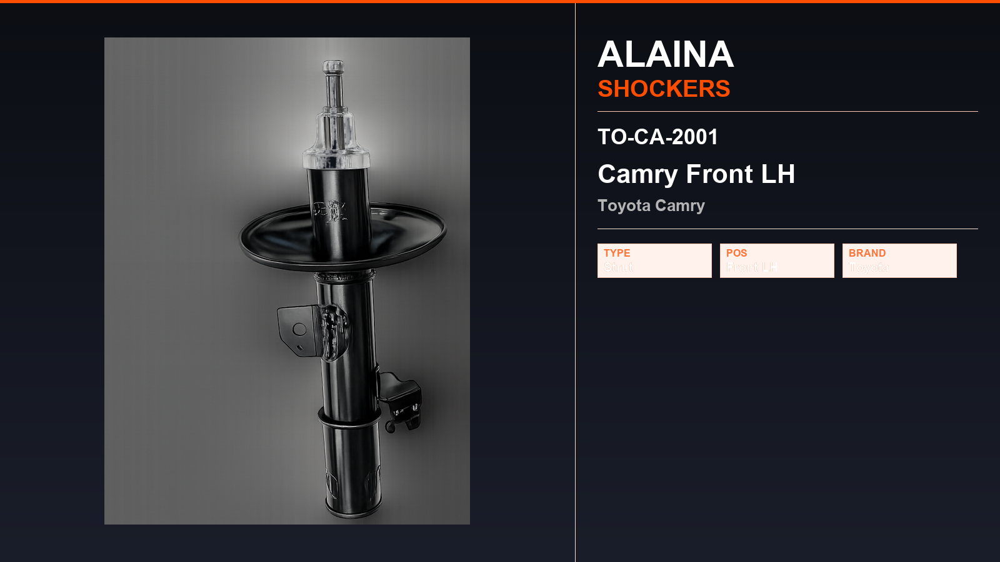

Toyota · Rare Strut / Shock Absorber
Corolla T-1 Rear TO-AL-2031
Alaina rare strut for Toyota Corolla T-1 (2008–2014). Listed in Technical Catalogue No.04. Built to OE reference dimensions and pressure-tested before dispatch.
")
")
Fitment
This rare strut is catalogued for Toyota Corolla T-1 (2008–2014). Confirm the OE number and the old unit before ordering. For the same vehicle see other Alaina Toyota parts below.